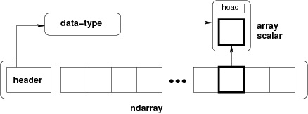

The most important object defined in NumPy is an N-dimensional array type called ndarray. It describes the collection of items of the same type. Items in the collection can be accessed using a zero-based index.
Every item in an ndarray takes the same size of block in the memory. Each element in ndarray is an object of data-type object (called dtype).
Any item extracted from ndarray object (by slicing) is represented by a Python object of one of array scalar types. The following diagram shows a relationship between ndarray, data type object (dtype) and array scalar type −
An instance of ndarray class can be constructed by different array creation routines described later in the tutorial. The basic ndarray is created using an array function in NumPy as follows −
numpy.array
It creates an ndarray from any object exposing array interface, or from any method that returns an array.
numpy.array(object, dtype = None, copy = True, order = None, subok = False, ndmin = 0)
The above constructor takes the following parameters −
|
S.No |
Parameter & Description |
|
1. |
object Any object exposing the array interface method returns an array, or any (nested) sequence. |
|
2. |
dtype Desired data type of array, optional |
|
3. |
copy Optional. By default (true), the object is copied |
|
4. |
order C (row major) or F (column major) or A (any) (default) |
|
5. |
subok By default, returned array forced to be a base class array. If true, sub-classes passed through |
|
6. |
ndimin Specifies minimum dimensions of resultant array |
Take a look at the following examples to understand better.
Example 1
import numpy as np
a = np.array([1,2,3])
print a
The output is as follows −
[1, 2, 3]
Example 2
# more than one dimensions
import numpy as np
a = np.array([[1, 2], [3, 4]])
print a
The output is as follows −
[[1, 2]
[3, 4]]
Example 3
# minimum dimensions
import numpy as np
a = np.array([1, 2, 3,4,5], ndmin = 2)
print a
The output is as follows −
[[1, 2, 3, 4, 5]]
Example 4
# dtype parameter
import numpy as np
a = np.array([1, 2, 3], dtype = complex)
print a
The output is as follows −
[ 1.+0.j, 2.+0.j, 3.+0.j]
The ndarray object consists of contiguous one-dimensional segment of computer memory, combined with an indexing scheme that maps each item to a location in the memory block. The memory block holds the elements in a row-major order (C style) or a column-major order (FORTRAN or MatLab style).